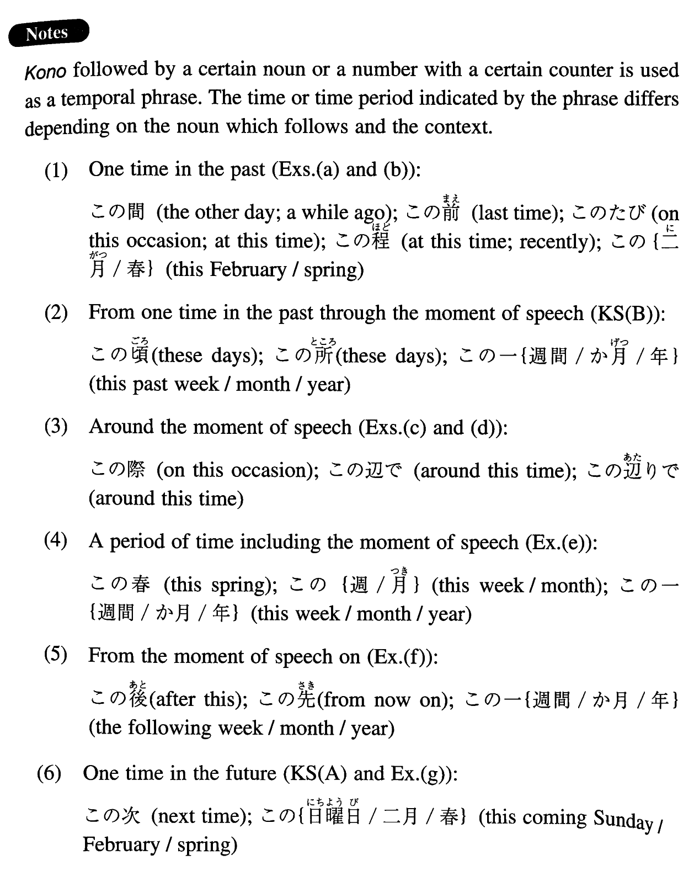

←
DoJG
→
この
(I. 127)
Example sentences
(ksa).
秋山さんは
この
春結婚します。
Miss Akiyama will marry (this spring / this coming spring).
(ksb).
山下君は
この
一週間授業を休んでいます。
Yamashita has been absent from class for the past (one) week.
(a).
この
間吉岡さんに会いました。
I met Mr. Yoshioka the other day.
(b).
この
たびこの会の会員に加えていただきました。
I became a member of this club at this time.
(c).
この
際車を買おうか。
Shall we buy a car given this occasion?
(d).
この
辺で妥協したらどうですか。
Why don't we compromise now (literally: around this time)?
(e).
この
夏は日本の女流作家の研究しています。
This summer I'm doing research on Japanese female writers.
(f).
この
一週間は忙しくて何もできないだろう。
I'll be busy this coming week and probably won't be able to do anything (else).
(g).
この
次はいつお目にかかれますか。
When could I meet you next?
Formation
(i)
この
Noun
この
秋
This autumn; this coming autumn
(ii)
この
Number+Counter
この
一年
This past year; this coming year
